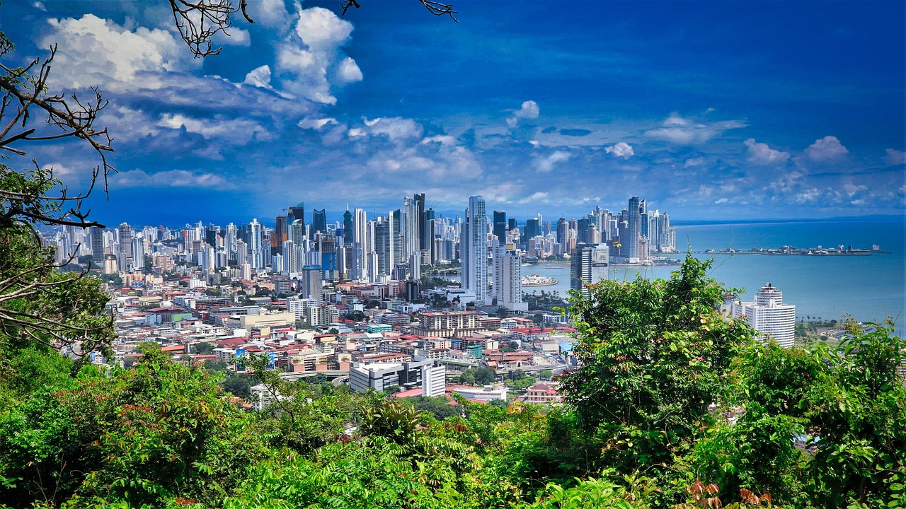

About turist places
My vacaitions in Panama


Tourist Places
click here to see more places
- Panama viejo
- Casco Antiguo
- Panama canal
Panama Viejo: is the remaining part of the original Panama City, the former capital of Panama,
which was destroyed in 1671 by the Welsh privateer Henry Morgan. It is located in the suburbs
of the current capital. Together with the historical district of Panamá, it has been a World Heritage Site since 1997.
Casco Antiguo: A charming neighborhood full of history
and culture. This destination is perfect for a visit on streets,
historic buildings and colorful doors make all visitors fall in love.
The Panama Canal:
Is a shortcut that greatly reduces the time for ships to travel between
the Atlantic and Pacific oceans,
enabling them to avoid the lengthy, hazardous routearound the southernmost tip of South America via the Drake Passage.